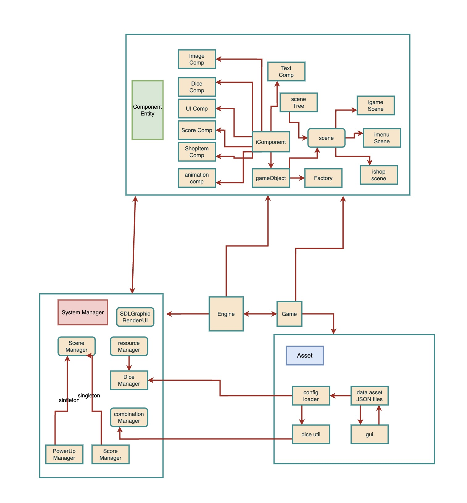

Engine Architecture
Fate's Gambit
Below are a few images showing the demo game we made, called Fate's Gambit. The game's idea is from Evan Shi.


This project is developed by Evan Shi, Jerry Shi, and Pengyu Wang, written in D. It is developed for the course CPSC 511: Building a Game Engine.
Here is a YouTube video showcasing the engine and the game we made:
Below are a few images showing the demo game we made, called Fate's Gambit. The game's idea is from Evan Shi.
Building our game engine was an exciting and enjoyable project that allowed our team to explore the intricacies of engine development. However, we went into the development without detailed planning, which led to unclear goals and priorities. This lack of initial planning made managing our time and resources challenging. As the engine grew, we faced significant difficulties in refactoring and adding new functionalities due to a flaky codebase. Additionally, our implementation approach is relatively conservatice, while ensuring stability, limited the engine’s flexibility and required the game itself to implement much of the logic.
Choosing Dlang as our programming language further complicated things, as the limited community support and scarce resources made troubleshooting and developing more difficult. Despite these obstacles, the project was a valuable learning experience that gave us much insights into game engine development. We gained important insights into the importance of planning, architectural flexibility, and the impact of language choice on development. Overall, building the game engine was a fun and enriching endeavor that provided memorable moments and prepared us for future projects with improved strategies.